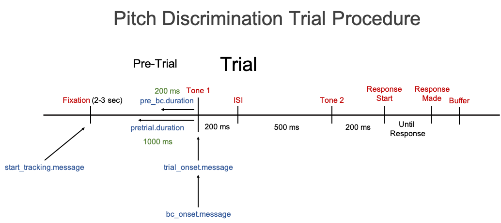

Example Data Set - Without Message Markers
Source:vignettes/Example Data Set without Message Markers.Rmd
Example Data Set without Message Markers.RmdScript example for preprocessing raw data file that does not contain message markers
Download the Example Data Set - Without Message Markers and run the script below
Pitch Discrimination Task
Information about example data set:
Raw Data Filename: “pitch_discrimination_19-1_001 Samples_messsagesRemoved.txt”
Eyetracker: SMI Red250 Mobile recorded at 250 Hz
Contains message markers: No
Subject #: 19
Task: Pitch Discrimination
Trial Procedure: Fixation (Pre-trial - 3000 to 2000 ms) -> Tone 1 (200 ms) -> Inter-stimulus Interval (ISI - 500 ms) -> Tone 2 (200 ms) -> Response Screen (Until response)
The ideal scenario is that you were able to insert message markers, that were synced to specific events in the experiment software, into the eyetracking data file itself. In this data set, that was not the case. There are no message markers in the data file indicating when the trial events (stimuli) occured. A depiction of a trial procedure with no message markers is given in the picture below.

This is an issue because we do not know when events actually occured and therefore cannot set the starttracking.message, trialonset.message, and bconset.messsage, parameters.
We need to insert Message Markers from an external data file. Notice, in the Example Data set that you downloaded there was a file called pitch_timing.csv. This file was created to insert Message Markers into the eyetracking data file. I have supplied you with this file for this example.
In your actual data, you will have to create this file on your own from the behavioral data produced by the experimental software you used. In setting up your experiment, then, it is vital that you make sure your timing data in your behavioral file corresponds directly to your timing data in the eyetracking data file. Otherwise there may be no way of actually syncing events in the experimental software with events in the eyetracking file.
Here is an actual depiction of the Trial Procedure for the Pitch Discrimination tasks with Message Markers. In order to go from the image above to this image, we need to specifiy the timing for each of the events.

Timing File with Message Markers
We can add the message markers with a file that specifies the timing for each of these events. This file needs to be in a specific layout in order to work properly. Essentially, it is a dataframe with columns and rows. There needs to be a column for Subject, Trial, and a column for every Message Marker.
For this Example Data Set, we need Message Marker column for:
Fixation
Tone 1
ISI
Tone 2
Response Start
Response Made
Buffer
However, the most critical ones are really only Fixation and Tone 1, but it would be nice to have all of them.
The file would be a dataframe that would look something like:

Notice that the column names correspond directly to the Message Marker names in the above figure. The column names will be inserted as messages in the data and when setting the parameters, starttracking.message, trialonset.message, and bconset.message.
The timing data for the first Message Marker MUST BE in absolute values (corresponding to the raw eyetracking data file Timing column). Whereas, the timing data for the other Message Markers can be in absolute values or values relative to the first Message Marker. Whichever is easiest for you to obtain.
From your behavioral data you can create this file in excel or whatever other software you find easiest to do so.
This task only has six trials and one subject so the data file is not that large. However, for an actual experiment you would have many more rows of data.
StartTracking Message
If you do not have message markes in the data, then you will not have a StartTracking message at the start of each trial. Instead, you can use the first stimulus event (usually the pre-trial event) as the StartTracking message. For instance, in this case it would be, starttracking.message <- "Fixation" because there is a message labeled Fixation in the data stream at the start of every trial.
Trial Onset Message
It is good practice in eye-tracking and pupillometry to have a pre-trial period before the trial actually begins. This does several things. One is that it allows the pupil response to return to normal after the previous trial (less interference from one trial to the next). Another is that research has shown the pre-trial pupil size is predictive of performance on the trial and therefore can be useful information.
In this pitch discrimination task, the actual duration of the pre-trial period (in which there was a central fixation on the screen) was either 3000 or 2000 ms. To define what length we want the pre-trial duration to be cutoff at in the data file we need to specify the TrialOnset message. The TrialOnset message corresponds the message marker in the data file for the first stimulus of the actual trial. In this case it is Tone 1. Therefore, we can set trialonset.message <- "Tone 1". Then we can set the pretrial duration relative to this message marker. Let’s go ahead and just set it as pretrial.duration <- 2000.
In the final preprocessed data file, the Time column will be set relative to the TrialOnset message. Therefore, the start of Tone 1 will have a Time of or near 0, the pre-trial phase will have a Time value of -2000 to 0, and anything after Tone 1 will have a positive value.
There will also be a column labeled Stimulus that has a value in every row corresponding to what stimulus event that eye sample belongs to (e.g. Tone 1, ISI, Tone 2, Response Start, etc.).
Apply Baseline Correction
If testing for the difference in pupil dilation between conditions or participants, it is important to apply some type of baseline correction.
First, you need to specify where you want baseline correction to start being applied to by specifiying a message marker in the data, the BC Onset message. In this case (and many cases), the BC Onset message is the same as the TrialOnset message. Therefore we can set bconset.message <- "Tone 1". You can even apply baseline correction multiple times in one trial. For instance, we could apply baseline correction at Tone 2 as well if we set it as bconset.message <- c("Tone 1", "Tone 2").
When applying baseline correction you need to calculate the median pupil size for a certain duration before the start of the BC Onset message. For this example let’s set the duration to 200 ms, bc.duration <- 200.
You need to decide which type of baseline correction to apply, subtractive or divisive.
In the final preprocessed data file there will be a new column for baseline corrected pupil data.
Other Parameters
Once you have the message markers all figured out you need to specify which preprocessing options you want to use.
For more details on the different options see the Article Preprocessing Options
# devtools::install_github("dr-JT/pupillometry")
library(pupillometry)
## Preprocessing parameters
# File Import Information
import.dir <- "data/Raw"
pattern <- "messagesRemoved.txt"
taskname <- "Pitch_Discrimination"
timing.file <- NULL
# Eyetrackers save the subject number information in different ways and is not
# always easy to obtain. For SMI eyetrackers we need to extract it from the
# datafile name. You need to identify a unique subj.prefix pattern and
# subj.suffix pattern that surrounds the subject # in the datafile name.
subj.prefix <- "n_" ## For SMI Red250m eyetrackers
subj.suffix <- "-" ## For SMI Red250m eyetrackers
# File Output Information
output.dir <- "data/Preprocessed"
output.steps <- FALSE
files.merge <- FALSE
# Eyetracker Information
eyetracker <- "smi"
hz <- 250
eye.use <- "left"
# Message Marker Information
starttracking.message <- "Fixation"
starttracking.match <- "exact"
trialonset.message <- "Tone 1"
trialonset.match <- "exact"
pretrial.duration <- 1000
bconset.message <- "Tone 1"
bconset.match <- "exact"
# Preprocessing Options
deblink.extend <- 100
smooth <- "hann"
smooth.window <- 500
interpolate <- "cubic-spline"
interpolate.maxgap <- 750
method.first <- "smooth"
bc <- "subtractive"
prebc.duration <- 200
missing.allowed <- .30
# Misc.
subset <- "default"
trial.exclude <- c()
############################
pupil_preprocess(import.dir = import.dir, pattern = pattern, taskname = taskname,
subj.prefix = subj.prefix, subj.suffix = subj.suffix,
timing.file = timing.file, output.dir = output.dir,
output.steps = output.steps, files.merge = files.merge,
eyetracker = eyetracker, hz = hz, eye.use = eye.use,
starttracking.message = starttracking.message,
starttracking.match = starttracking.match,
trialonset.message = trialonset.message,
trialonset.match = trialonset.match,
pretrial.duration = pretrial.duration,
bconset.message = bconset.message,
bconset.match = bconset.match, deblink.extend = deblink.extend,
smooth = smooth, smooth.window = smooth.window,
interpolate = interpolate,
interpolate.maxgap = interpolate.maxgap,
method.first = method.first, bc = bc,
prebc.duration = prebc.duration,
missing.allowed = missing.allowed, subset = subset,
trial.exclude = trial.exclude)